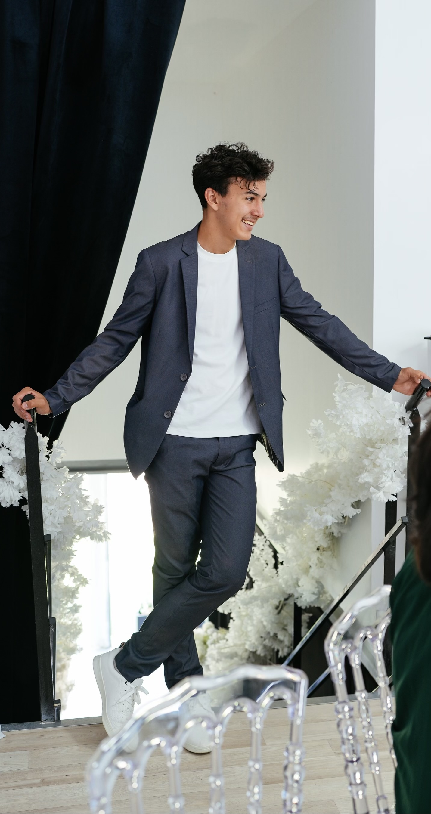
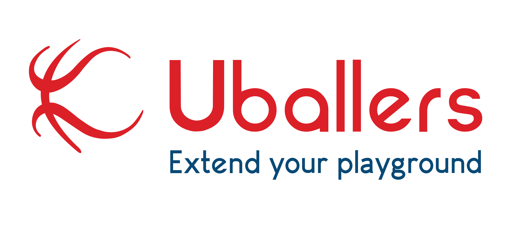

À propos
Mon Profil
Développeur passionné & Étudiant en BTS SIO SLAM
Bonjour ! Je m'appelle Ayoub Hamila. Curieux et rigoureux, j'aime concevoir des solutions logicielles performantes et résoudre des problèmes techniques complexes. Mon parcours en SLAM m'a permis de développer une solide base en programmation et en gestion de bases de données.

Formation
Le BTS SIO
Le BTS Services Informatiques aux Organisations (SIO) est un diplôme d'État formant des techniciens supérieurs capables de répondre aux besoins de transformation numérique des entreprises. Cette formation repose sur un socle commun de compétences — cybersécurité, gestion de projet, support — avant de se diviser en deux spécialités distinctes.
Option SISR
Solutions d'Infrastructure, Systèmes et Réseaux
Destinée aux futurs Administrateurs Systèmes et Réseaux, cette option forme à l'installation, la sécurisation et la maintenance des infrastructures. Gestion de serveurs, configuration réseau, haute disponibilité.
Option SLAM
Solutions Logicielles et Applications Métiers
Destinée aux futurs Développeurs d'Applications, cette option couvre la conception et la maintenance de solutions logicielles, du Web au Mobile, avec des langages modernes et des méthodes agiles.
Expériences
Stages
Taxiora
Au sein d'une TPE spécialisée en informatique et électronique, contribution à l'automatisation système et à la promotion technologique.
- Automatisation : Scripts de nettoyage et suivi des certificats SSL.
- Maintenance : Diagnostic et tests de matériel électronique embarqué.
- Événementiel : Représentation au salon VIVA Technology 2025.

Uballers
Développement backend d'une application de basketball en méthode Agile SCRUM.
-
Développement API : Sécurisation des données via
inputCheck. - Base de données : Requêtes SQL et gestion d'entités.
- Optimisation : Refonte d'arborescence et logs système.
Réalisations
Projets
Méthodologie & Collaboration
Projets réalisés en binôme avec GitHub comme plateforme de gestion de versions, et GitHub Desktop pour les synchronisations de code.
Sicily Lines — Gestion de Flotte
Site web de gestion complète des ferrys de la compagnie maritime Sicily Lines.
- Authentification sécurisée
- CRUD dynamique
- PDF automatique (DomPDF)
- Architecture MVC
Sicily Lines — Gestion des Liaisons
Application Windows de consultation et filtrage dynamique des liaisons maritimes par secteur.
- Interface WinForms ergonomique
- Filtrage dynamique par secteur
- Accès SQL Server
- Programmation orientée objet
Épreuve E4
Veille Technologique
Sujet de Veille
« Cybersécurité Hospitalière : Protéger les infrastructures vitales sans paralyser le soin »
Qu'est-ce qu'une veille technologique ?
La veille technologique est une activité de surveillance systématique et organisée des innovations, des évolutions techniques et des menaces au sein d'un secteur spécifique. Elle consiste à collecter, analyser et exploiter des informations stratégiques pour anticiper les mutations du marché, s'adapter aux nouvelles réglementations et maintenir un haut niveau d'expertise technique.
Cyberattaque Weda : 23 000 soignants bloqués une semaine
L'éditeur du logiciel médical Weda, filiale du groupe Vidal, a subi une cyberattaque. Par mesure de précaution, l'accès à la plateforme a été suspendu pour plus de 23 000 médecins et structures médicales, qui n'ont pas pu accéder aux données de leurs patients pendant plusieurs jours. Les cabinets ont dû basculer sur le papier pendant près d'une semaine, avec une reprise en mode dégradé seulement le 14 novembre.
Analyse — Lien avec la problématique
Sans Plan de Continuité d'Activité (PCA) testé, la suspension préventive d'un service cloud centralisé paralyse instantanément toute la chaîne de soins.
Ouverture du guichet HospiConnect / HOP'EN 2
Le guichet de candidature pour le programme HospiConnect/HOP'EN 2 a été ouvert du 20 janvier au 13 février 2026. Deux dispositifs sont financés sur trois ans : HospiConnect/HOP'EN 2, qui sécurise la chaîne d'identification électronique des soignants pour l'accès au SI hospitalier et au DMP, et HospiConnect/CaRE, qui finance les moyens d'authentification à deux facteurs (2FA) conformes au référentiel national.
Analyse — Lien avec la problématique
Le MFA est imposé tout en étant adapté aux contraintes médicales, pour sécuriser sans bloquer les soignants en urgence.
Stratégie Nationale de Cybersécurité 2026–2030
La ministre déléguée Anne Le Hénanff a présenté le 29 janvier 2026 la Stratégie nationale de cybersécurité 2026-2030, reposant sur 5 piliers et 14 objectifs : développer une culture de la cybersécurité, rehausser le niveau global de protection, entraver la cybermenace, maîtriser les dépendances technologiques et soutenir la stabilité du cyberespace. L'usage de l'IA par les attaquants est au cœur des préoccupations.
Analyse — Lien avec la problématique
Le pilier « Renforcer la résilience » cible explicitement les infrastructures critiques dont les hôpitaux, avec exercices de crise et outils d'accompagnement.
JDN : L'écart entre l'ambition de la stratégie et la réalité du terrain
Le Journal du Net analyse la stratégie nationale de façon critique : dans les hôpitaux comme dans les collectivités, la cybersécurité se superpose à des enjeux très lourds. Le MFA est pertinent mais insuffisant sans gouvernance des accès ni gestion des comptes à privilèges. La maturité cyber se mesure à la capacité à piloter le risque dans la durée.
Analyse — Lien avec la problématique
La gouvernance et la gestion des comptes à privilèges sont aussi décisives que les outils techniques pour ne pas bloquer les soignants.
Référentiel AppCV : l'authentification patients publiée au J.O.
Le référentiel fixant les conditions d'utilisation de l'application Carte Vitale (ApCV) comme moyen d'authentification des assurés à distance a été publié au Journal officiel. Ce texte standardise les accès numériques en santé côté patients, en complément de HospiConnect côté soignants.
Analyse — Lien avec la problématique
L'identité numérique forte des patients réduit les risques d'usurpation sans imposer de lourdeur supplémentaire aux soignants.
Cegedim Santé : 15 millions de dossiers patients sur le dark web
Révélée au 20h de France 2, une cyberattaque sur le logiciel MLM de Cegedim Santé a exposé les données de 15 millions de Français. L'attaque revendiquée par DumpSec a ciblé 1 500 médecins. Cegedim avait déposé plainte en octobre 2025, mais les médecins n'ont été informés qu'en janvier 2026. Pour 164 000 patients, des annotations libres très sensibles ont été compromises.
Analyse — Lien avec la problématique
Un délai de 4 mois avant information publique est susceptible de constituer une violation de l'article 34 du RGPD. Cas emblématique du risque des prestataires logiciels tiers.
JDN : La case « commentaires libres », le risque sous-estimé
Le RGPD interdit le traitement des données de santé sauf exceptions (article 9-2). Un champ texte libre peut contenir des informations excédant ce qui est nécessaire à la prise en charge. La CNIL recommande des formulations neutres. Dans une cyberattaque, ce champ non classifié devient le maillon le plus vulnérable.
Analyse — Lien avec la problématique
Un défaut de Security by Design rend une attaque bien plus grave. La classification des données dès la conception est essentielle.
Journal du Geek : Cegedim, un scandale en perspective
France 2 affirme avoir trouvé des informations très sensibles : séropositivité, troubles psychiatriques, données sur des personnalités politiques. Stéphanie Rist convoque Cegedim à Bercy le 5 mars. La CNIL avait déjà infligé 800 000 € d'amende à Cegedim en 2024 — treize jours seulement avant la révélation de la fuite.
Analyse — Lien avec la problématique
Illustre la chaîne de responsabilités entre éditeur, médecin et institutions : quand l'attaque vise un prestataire privé, c'est tout le système de confiance numérique en santé qui est ébranlé.
Contact
Me contacter
Disponible pour toute opportunité de stage ou d'alternance.